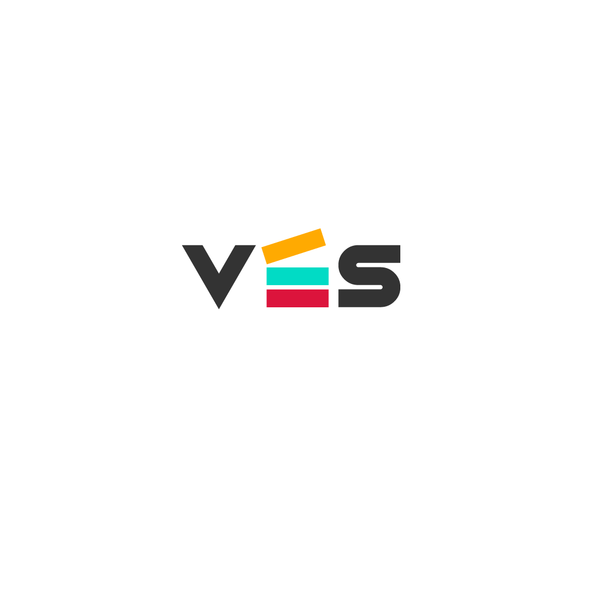

IT System Administrator at Hypoport Hub SE managing systems, infrastructure, and technical support. I deliver practical, structured solutions that enable people and teams. I thrive in collaborative environments and believe IT should support users, not hinder them.
Achieving all that is POSSIBLE to be achieved
Studied across multiple countries, developing global perspective and cultural adaptability.
Primary and secondary education in Ghana; continued in Germany, broadening worldview and adaptability.
Blend of traditional learning, online courses, and international seminars supporting continuous skill development.
Continuous growth and excellence—striving to achieve all that is possible, both professionally and academically.
Recognition comes from raising standards, learning continuously, and delivering quality work I can stand behind.
Hands-on experience with diverse organizations including eSailors and Julie & Grace, learning and growing across multiple roles.
Real growth happens beyond the classroom through internships and volunteering—each role strengthens skills and perspective.
IT system administration, VoIP, network support, troubleshooting, cybersecurity, and cloud fundamentals—focused on reliable, secure systems.
HTML, CSS, JavaScript, Python, and AI prompting combined with strong communication, teamwork, and problem-solving capabilities.
Languages help me connect across cultures—fluent in multiple languages from diverse backgrounds.
Languages range from fluent to in-progress, each adding to my communication and connection skills.
Here are a few References. Upon Request, these will be provided.